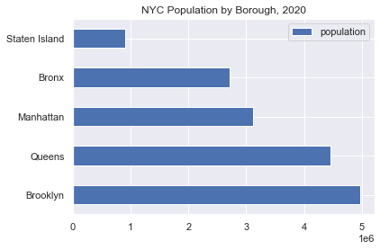

About NYC311
NYC311 by the New York City government provides the public with government and non-emergency services. Complaints will be forwarded to various agencies such as local governments, public utilities, and other public services. Citizens can file a complaint about various problem, such as illegal parking, noise, heating, and apartment maintenance. The complaints are coming from five boroughs, which are Queens, Brooklyn, Bronx, Staten Island, and Manhattan.
Housing and Buildings Complaints
Department of Housing Preservation and Development (HPD) is the agency responsible to process the complaints related to housing and building. HPD fields most reports, second only to the NYC Police Department.
HPD is seeking help to manage the large volume of complaints by focusing on the most pressing complaint and determine the possibility of the complaints. This analysis provides insight to the trends of the complaint received by HPD.
We also investigate the relationship between building characteristics with the complaint type of our focus.
Datasets Used
original source from NYC OpenData
data only related to HPD, compiled and uploaded to server by edX Data Science and Machine Learning Capstone Project course (2.37 GB)
The Primary Land Use Tax Lot Output by NYC Department of City Planning (download here)
The visualization in this page is made based on a smaller dataset of 180k rows, sampled randomly, from 2015 to 2019.
There are 14 types of complaints under Housing and Buildings category, with HEAT/HOT WATER having the highest number of complaints. This type of complaint comprises 37.9% of the total complaints on housing and buildings.
Building owners are required to meet the heat requirements according to the law. This includes residential building, commercial building, and other public facilities such as child care, nursing home, homeless shelter, and public school. When the heat requirements are not met, citizens can file a complaint. The NYC311 Service does not serve complaints coming from private homes, apartments, and other residential spaces.
Bronx has the highest number of HEAT/HOT WATER complaints from 2015 - 2019, followed closely with Brooklyn. On the other hand, Bronx only has population of 2.7 million, the fourth highest after Brooklyn, Queens, and Manhattan. This means the heat complaint in Bronx has the highest density compared in the other borough.

Top 10 Complaints in 2015 - 2019
HEAT/HOT WATER complaints made up 37.5% of total houses and buildings complaints.
Heat Complaints in Each Borough
Bronx has the highest HEAT/HOT WATER complaints almost every year between 2015 and 2019, except in 2018.
Complaints Map
The map below shows the distribution of total and HEAT/HOT WATER complaints in NYC at zipcode level.